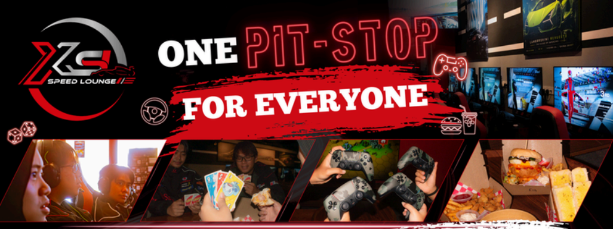
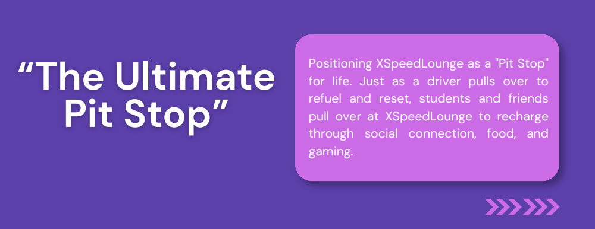
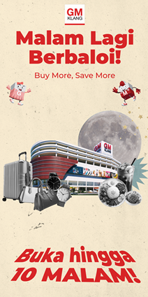
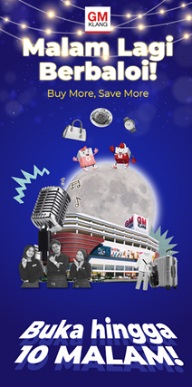
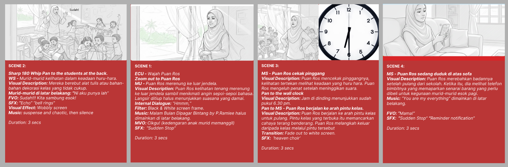
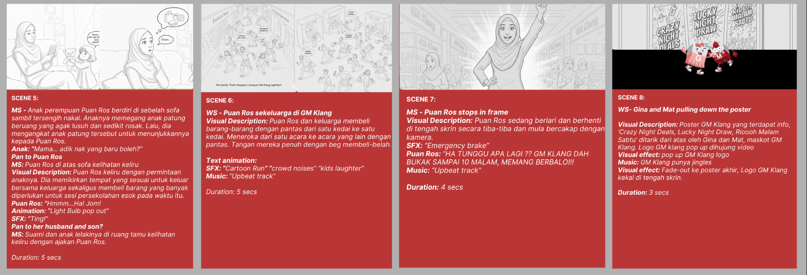

ADVERTISING CAMPAIGN
XSPEED LOUNGE
One-Pit Stop for Everyone
An advertising campaign aimed at promoting Xspeed Lounge as a go-to socializing destination. The campaign emphasizes the importance of creating a welcoming environment for people to unwind and connect.

Campaign Overview
ROLE
Account Planner
TEAM
ReAliss Agency
The Insight
While young adults want a vibrant late-night spot to socialise, they mistake the space for an exclusive gaming/racing venue rather than a general hangout cafe, causing them to look elsewhere despite the location offering exactly what they need.
Research from our survey reveals that while most target respondents are local female students looking for deals, over half have never visited XSpeed Lounge because they view it as a niche gaming spot rather than an accessible social hangout.
THE BIG IDEA

CAMPAIGN DNA
Creative Direction
Audience
Students, parents, motorsport enthusiasts, and social groups like friends and families looking for a social spot.
Tone
Casual, energetic, welcoming and a splash of humor,built to feel like an exciting yet easygoing late-night hangout spot for friends and families.
Visual Language
A high-contrast, neon-accented visual style featuring candid friend groups, food, comedic stories, and bold promotional graphics designed for TikTok and Instagram feeds.
CAMPAIGN EXECUTION
Bringing the Idea to Life
Google Display Network
Digital placements developed using a digital journaling and mixed-media collage aesthetic across lifestyle, news, and business platforms.


YouTube Video Ads
A 30-second video concept using relatable everyday scenarios to highlight GM Klang's extended operating hours and night-time activities.


MY CONTRIBUTION
My Contribution as Account Planner
Creative Direction
Led brainstorming sessions and shaped the campaign vision, tone, and overall creative direction for GM Klang's repositioning strategy.
Strategic Development
Connected audience insights with creative solutions to ensure the campaign idea aligned with consumer behaviour.
Content Execution
Guided the development of video concepts, scripts, and campaign materials across digital platforms.
05 — OUTCOME
What This Project Taught Me
Leading the creative direction for GM Klang strengthened my ability to translate consumer insights into compelling campaign ideas while collaborating across strategy, copywriting, and visual execution. It reinforced the importance of balancing creativity with business objectives to deliver campaigns that are both engaging and purposeful.